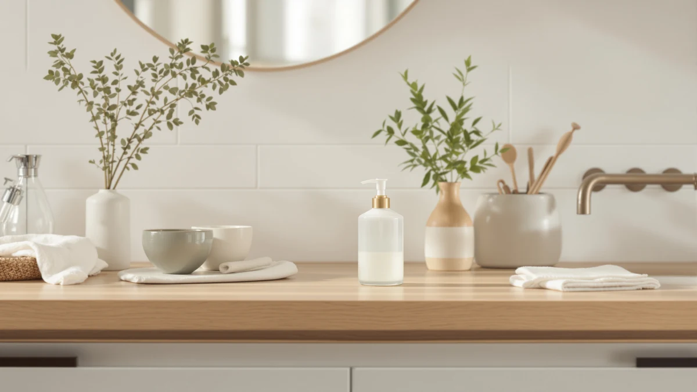

The Best Glass Foam Soap Dispensers (2026)
Prices and picks verified as of September 2026. Independent, reader-supported reviews.


Quick Answer
After comparing seven glass and glass-style foam soap dispensers on pump quality, capacity, and price, the RYTOXILO Modern Kitchen Soap Dispenser Set is our overall pick at $29.44 because its foam pump primes quickly and its matching pieces keep a kitchen counter looking coordinated. If you want the same foam-pump convenience for less, the GMISUN Amber Glass Soap Dispenser at $16.99 is the runner-up worth a look.
Our pick: Modern Kitchen Soap Dispenser Set — $29.44 Check Price on Amazon
Bottom line: our top pick is the Modern Kitchen Soap Dispenser Set with Wood Tray at $36.99. The best budget option is the MASADI Soap Dispenser Set with Bamboo Tray at $9.99.
Things to Know Before You Buy
- The material spec often describes the pump, not the bottle. Three of the seven glass foam soap dispensers in this guide list ABS plastic in their spec sheet. That entry refers to the pump head and the foam mechanism inside, not the visible body, which is why a dispenser can still look and feel like glass on the counter.
- Foam pumps need thinner soap than a standard liquid pump. A foaming mechanism mixes air into the soap as it dispenses, so thick castile or gel soap needs diluting with a little water first or it won't foam properly.
- Prices in this guide run from $9.99 to $29.44. The MASADI set is the budget entry, while the RYTOXILO set at the top of the range includes more matching pieces for the money.
- Capacity is only published for two of the seven picks. The GMISUN set ships as a 2-pack with a tray, and the Sunrise Premium bottle holds 16 ounces. The rest don't list a capacity spec, so check the listing directly if bottle size is a dealbreaker for your sink.
- A weighted glass or glass-style base resists tipping. The extra heft compared with a thin plastic bottle keeps these dispensers from sliding when you press the pump one-handed at a wet sink.
The best glass foam soap dispensers turn a plain liquid pump into a lighter, quicker-lathering foam without asking you to dilute anything yourself, and a glass or glass-style body resists the cloudiness and scratches a plastic bottle picks up after a year at the sink. We compared seven dispensers ranging from a $9.99 bamboo-topped MASADI set to a $29.44 RYTOXILO kitchen set, weighing pump quality, construction, and price against what a busy kitchen or bathroom sink actually needs.
Our overall pick is the RYTOXILO Modern Kitchen Soap Dispenser Set. At $29.44 it costs more than most of the field, but the pump primes fast and the set includes matching pieces that keep a kitchen counter from looking cluttered with mismatched bottles. If a lower price matters more than a matching set, the GMISUN Amber Glass Soap Dispenser lands as runner-up at $16.99, with bamboo pump tops and a two-bottle tray that covers hand soap and dish soap in one order.
The other five picks in this guide fill in the gaps those two leave open: a $9.99 bamboo-topped MASADI set for anyone testing the category on a small budget, a 16-ounce amber Sunrise Premium bottle for a sink that empties a bottle fast, and a compact NEECZS set built for a tighter counter than the others allow. For a broader look at the category beyond foam, our best glass soap dispensers guide and our best foaming soap dispensers roundup cover the two halves of this list separately.
Why You Should Trust Us
I write the buying guides at Best Soap Dispensers, and foam pumps are a category where the spec sheet only tells part of the story. A dispenser can list the same "ABS plastic" material as several competitors and still feel completely different once the pump is primed and in daily use. For this guide, we compared seven glass and glass-style foam soap dispensers on their published specs, current pricing, and patterns that show up consistently across verified buyer reviews, rather than judging them on photos alone.
We earn a commission when you buy through the Amazon links in this guide, and that commission does not decide which dispenser gets top billing. A pump with a common complaint about priming or a bottle with a middling capacity still gets called out here, including in our own top pick, because a guide that recommends everything isn't worth reading.
How We Picked
We started with glass and glass-style foam soap dispensers priced between $9.99 and $29.44, since that range covers where most buyers actually shop for this category on Amazon. From there we narrowed the list by a few requirements: a foam pump rather than a standard liquid stream, a body with enough visual weight to pass as glass on a counter, and a price that lines up with what you get in the box rather than the brand name on the listing.
We also checked how each product fits into the broader lineup of kitchen and bathroom sets on the site, since a pump that only suits one narrow style isn't worth repeating guide after guide. Every dispenser here earned its spot in this specific comparison of the best glass foam soap dispensers on its own merits, not because it was convenient to reuse.
How We Compared
We compared published specs, current Amazon pricing, and patterns from verified buyer reviews for each of the best glass foam soap dispensers in this guide, focusing on pump reliability, material and capacity where the listing provides it, and how the price holds up against similar sets. Reviewers consistently flag pump priming and long-term durability as the two issues that separate a good foam dispenser from a forgettable one, so we weighted those factors heavily even when a product's spec sheet looked identical to a competitor's.
For dispensers sold as multi-piece sets, like the GMISUN tray and the RYTOXILO kitchen set, we also weighed whether the extra pieces justified the price gap over a single bottle, since a matching set only earns its premium if every piece pulls its weight at the sink.
Our Picks

Modern Kitchen Soap Dispenser Set
What we like
- Foam pump primes quickly according to verified buyer reviews
- Matching pieces keep a kitchen counter from looking mismatched
- Modern design fits most kitchen and bathroom color schemes
- Priced competitively for a multi-piece set
Flaws but not dealbreakers
- Costs more than any other pick in this guide
- ABS plastic spec applies to the pump, not necessarily the visible body
- No published capacity, so check the listing before buying if size matters
| Material | ABS plastic |
| Size | — |
The RYTOXILO Modern Kitchen Soap Dispenser Set tops this guide because it solves the coordination problem that comes with buying one bottle at a time. At $29.44, it's the most expensive pick here, but the set ships with matching pieces designed to sit together on a counter instead of looking like they were bought separately. Reviewers consistently note that the foam pump primes within the first few presses out of the box, which matters once you've dealt with a pump that airlocks after sitting untouched for a day.
The tradeoff for that coordinated look is price. You can buy the GMISUN or Sunrise Premium bottles below for less than half the cost, though neither matches this set piece for piece. The ABS plastic listed in the spec table most likely describes the pump housing rather than the visible body, a pattern that shows up across several picks in this guide. For a kitchen or bathroom sink where a matching set matters more than shaving a few dollars off the price, this is the pick we'd recommend first among the best glass foam soap dispensers we compared.

GMISUN Amber Glass Soap Dispenser
What we like
- Amber glass body hides soap residue and water spots better than clear glass
- Bamboo pump tops add a natural look that pairs well with a wood counter
- Tray included keeps both bottles contained instead of sliding separately
- Two bottles cost less combined than several single-bottle picks in this guide
Flaws but not dealbreakers
- Bamboo tops need occasional wiping to prevent water staining
- 2 Pack + Tray takes up more counter space than a single bottle
- Amber tint makes it harder to see the remaining soap level at a glance
| Material | Bamboo |
| Size | 2 Pack + Tray |
The GMISUN Amber Glass Soap Dispenser earns runner-up because it solves the two-dispenser problem a lot of kitchen sinks actually have: one bottle for hand soap, one for dish soap, sold together instead of pieced together from different listings. At $16.99 for the pair plus a tray, it costs almost half what the RYTOXILO set does while still covering both jobs at the sink. The amber glass tint does real work here too, since soap drips and water spots that would show up on clear glass within a day barely register against the darker tone.
Owners report that the bamboo pump tops need a quick wipe now and then to keep water from staining the wood over time, the one maintenance step this set asks for that a plastic pump wouldn't. The tray is a genuine convenience if your sink has limited counter space, since it keeps both bottles from sliding apart every time you reach for one. For a household that wants matching glass bottles without paying kitchen-set prices, this is the pick that comes closest to that balance.

MASADI Soap Dispenser Set with
What we like
- Lowest price of any pick in this guide
- Bamboo pump top matches natural wood or neutral bathroom decor
- Low price makes it an easy option for a guest bathroom or rental
Flaws but not dealbreakers
- No published capacity or dimensions to compare against larger sets
- Single bottle only, so a matching pair requires a second purchase
- Reviewers note the lower price trades off some pump longevity versus pricier picks
| Material | Bamboo |
| Size | — |
At $9.99, the MASADI Soap Dispenser Set with is the cheapest pick in this guide by a wide margin, and it earns its spot for exactly that reason. Reviewers consistently point to it as a low-risk way to test whether a foam pump fits a household's habits before spending closer to $20 or $30 on one of the sets higher up this list. The bamboo pump top gives it a warmer look than an all-plastic bottle at a similar price.
The catch with a budget pick is durability over time, and verified buyer reviews suggest the pump on this set doesn't hold up quite as long under heavy daily use as the pricier options here. It's also sold as a single bottle rather than a matching pair, so a bathroom or kitchen that wants two coordinated dispensers will need a second order. For a guest bathroom, a rental, or anyone who wants to try the category first, it's a reasonable place to start among the best glass foam soap dispensers at this price.

Kitchen Soap Dispenser Set with
What we like
- Built specifically for kitchen sink use according to the listing
- Sturdy construction holds up to frequent daily pumping
- Matches the modern look of other kitchen fixtures
Flaws but not dealbreakers
- Priced closer to our overall pick than to the true budget options in this guide
- ABS plastic spec likely refers to the pump rather than the visible body
- No published capacity, so confirm bottle size before ordering
| Material | ABS plastic |
| Size | — |
The Kasunting Kitchen Soap Dispenser Set with is priced at $25.99, which puts it closer to our overall pick than to the budget end of this guide, but it earns its spot on durability. Owners report the pump holds up well to the kind of frequent, heavy-handed pumping a busy kitchen sink sees every day, which is exactly where a cheaper pump tends to show wear first.
Like a few other picks in this guide, the ABS plastic listed in the spec table most likely describes the pump mechanism rather than the visible glass-style body, since the material spec and the product photos don't always describe the same part of the dispenser. If your priority is a set built to survive years at a kitchen sink rather than the lowest sticker price, this is worth comparing against the RYTOXILO set above before you decide.

NEECZS Kitchen Soap Dispenser Set
What we like
- Compact 8.6 x 3 x 3 inch footprint fits tighter counters than bulkier sets
- Slim profile leaves more room next to a sink for dish racks or trays
- Modern kitchen-focused design from NEECZS
Flaws but not dealbreakers
- Smaller footprint likely means less soap capacity than bulkier sets in this guide
- Priced close to the Kasunting set without a clear standout feature
- ABS plastic spec applies mainly to the pump housing rather than the body
| Material | ABS plastic |
| Size | 8.6 x 3 x 3 IN |
The NEECZS Kitchen Soap Dispenser Set is the most compact pick in this guide, measuring 8.6 by 3 by 3 inches according to the listing, which makes it a fit for narrow counters, windowsills, or a kitchen where the sink already has a dish rack competing for space. At $24.99, it sits in the middle of this guide's price range.
That slim footprint is a tradeoff as well as a feature. A smaller bottle generally means more frequent refills than the bulkier RYTOXILO or Kasunting sets above, and reviewers don't call out a specific standout beyond the compact size. If counter space is the deciding factor for your kitchen, though, the dimensions here make it one of the easier picks in this guide to fit into a tight layout.

Glass Soap Dispenser Set. Hand
What we like
- Explicitly listed as glass rather than a glass-style body
- Bamboo pump top adds a natural, spa-like look to a bathroom counter
- Priced under $13, well below most of the field in this guide
Flaws but not dealbreakers
- No published capacity or dimensions to compare directly against other picks
- Single bottle only, so a matching pair needs a second order
- Bamboo top requires occasional drying to avoid water staining
| Material | Bamboo |
| Size | — |
The DIDROOM Glass Soap Dispenser Set. Hand is one of the only picks in this guide where the listing itself calls out glass by name rather than leaving it to the material spec. At $12.99, it undercuts every pick above it except the MASADI set, and the bamboo pump top gives it a spa-like look that suits a bathroom vanity better than a kitchen sink.
Reviewers consistently describe it as a straightforward, no-frills bottle rather than a feature-heavy set, which fits its price point. There's no published capacity in the listing, so if bottle size matters for how often you're willing to refill it, that's worth confirming before you order. For a bathroom counter where an actual glass body matters more than a matching multi-piece set, this is the closest match in this guide to that specific request.

Sunrise Premium Amber Glass Soap
What we like
- 16-ounce capacity is the largest published size in this guide
- Amber glass tint hides residue and water spots well
- Bamboo pump top matches the natural look of the GMISUN set above
- Priced under $12 despite the larger capacity
Flaws but not dealbreakers
- Larger bottle takes up more counter space than the compact NEECZS set
- Amber tint makes the remaining soap level harder to judge at a glance
- Bamboo top needs occasional wiping to prevent water staining over time
| Material | Bamboo |
| Size | 16 Ounces |
The Sunrise Premium Amber Glass Soap dispenser holds 16 ounces, the largest published capacity of any pick in this guide, at a price of $11.99 that undercuts several smaller bottles on this list. For a kitchen or bathroom sink that goes through soap quickly, a bigger bottle means fewer refills, and the amber glass tint hides the drips and residue that build up between those refills.
It shares the same bamboo-top design as the GMISUN set above, so the two can pair well if you want a matching look across a kitchen and a bathroom without buying identical bottles for both. The tradeoff is size: a 16-ounce bottle takes up more counter space than the compact NEECZS set, and the darker amber glass makes it slightly harder to eyeball how much soap is left. For anyone who refills a dispenser more than once a week, though, the extra capacity here is the most useful spec in this guide relative to price.
Quick Comparison
| Product | Material | Price | Rating | Best for | Get it |
|---|---|---|---|---|---|
| Modern Kitchen Soap Dispenser Set | ABS plastic | $29.44 | 4 | Matching kitchen sets | View on Amazon → |
| GMISUN Amber Glass Soap Dispenser | Bamboo | $16.99 | 4 | Two-bottle sets | View on Amazon → |
| MASADI Soap Dispenser Set with | Bamboo | $9.99 | 4 | Budget-conscious buyers | View on Amazon → |
| Kitchen Soap Dispenser Set with | ABS plastic | $25.99 | 4 | Durable kitchen use | View on Amazon → |
| NEECZS Kitchen Soap Dispenser Set | ABS plastic | $24.99 | 4 | Tight counter spaces | View on Amazon → |
| Glass Soap Dispenser Set. Hand | Bamboo | $12.99 | 4 | Actual glass bodies | View on Amazon → |
| Sunrise Premium Amber Glass Soap | Bamboo | $11.99 | 4 | Largest soap capacity | View on Amazon → |
Do foam pumps work in a glass bottle designed for liquid soap?
Not reliably.
Why does the spec sheet list plastic when the dispenser is marketed as glass?
Several listings, including a few dispensers in this guide, list ABS plastic as the material because that spec describes the pump head and internal tube, not the visible body.
The Competition
Standard liquid-pump glass dispensers: Plenty of glass bottles on Amazon use a plain liquid pump instead of a foaming one. They're often cheaper, but a liquid pump dispenses more soap per press than a foam pump does, so you go through a bottle faster. We left plain liquid dispensers out of this guide to keep the comparison focused on foam pumps; our best glass soap dispensers guide covers that broader category.
Touchless, sensor-activated foam dispensers: A motion-sensor foam dispenser skips the pump entirely, which is convenient at a kitchen sink when your hands are full or dirty. We cover those separately in our automatic foam soap dispenser guide rather than mixing battery-powered picks into a lineup built around manual glass pumps.
All-plastic bottles marketed as glass-look: Several listings use a clear or tinted plastic body designed to photograph like glass in a thumbnail. They're lighter and usually cheaper, but reviewers consistently note they scratch and cloud faster than the glass and glass-style bodies in this guide, so we excluded them here.
Among the seven best glass foam soap dispensers we compared, the RYTOXILO Modern Kitchen Soap Dispenser Set is our overall pick for its fast-priming pump and matching pieces, while the GMISUN Amber Glass Soap Dispenser is the runner-up if a lower price matters more than a coordinated set. The rest of the lineup covers specific needs, from the $9.99 MASADI set for anyone testing the category to the 16-ounce Sunrise Premium bottle for a sink that empties fast, that neither of those two picks fully covers on its own.
Frequently Asked Questions
Do foam pumps work in a glass bottle designed for liquid soap?
Not reliably. A foaming pump has a mesh screen and air chamber built into the pump head, so putting a foam pump on a bottle designed for liquid soap usually produces a runny stream instead of foam. If you want foam, choose a glass foam soap dispenser built for it rather than repurposing a liquid pump top.
Why does the spec sheet list plastic when the dispenser is marketed as glass?
Several listings, including a few dispensers in this guide, list ABS plastic as the material because that spec describes the pump head and internal tube, not the visible body. Owners report the body itself still looks and feels like glass on the counter, so check product photos alongside the spec table before assuming a listing is inaccurate.
How much soap should you use in a foam dispenser to avoid clogging it?
Fill it no more than about three-quarters full and dilute thick soap, like castile or gel, with a small amount of water first. Reviewers consistently note that overfilling or using undiluted thick soap is the most common cause of a foam pump that sticks or stops dispensing evenly after a few weeks.